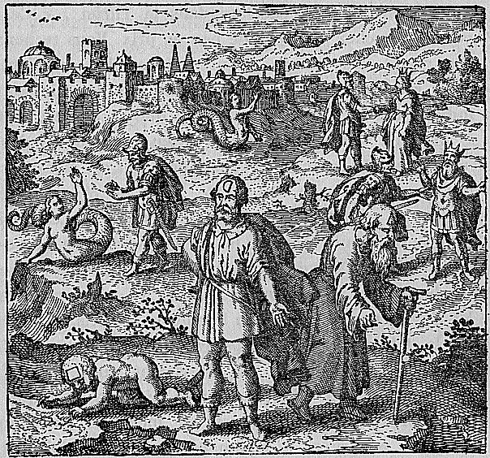

Oedipus confronts the Sphinx on a rocky outcrop or mountainside. The Sphinx — part woman, part lion, part eagle — poses its riddle while Oedipus responds. In the background or a secondary scene, the consequences of the story unfold: Oedipus's father Laius lies dead, and the marriage to Jocasta is suggested. The scene combines the riddle-challenge with its fateful aftermath.
Oedipus, having conquered the Sphinx and having killed his father Laius, married his mother Jocasta.
Maier retells the Oedipus myth as an alchemical allegory: conquering the Sphinx (solving the riddle of Nature) leads to killing the father (destroying the original metallic form) and marrying the mother (reuniting with the prima materia from which the metal was born). He argues that this seemingly transgressive sequence — patricide and incest — is actually the normal order of alchemical transformation, where the product must dissolve its parent substance and recombine with its own origin. The discourse frames the Sphinx's riddle as the central question of alchemy: what walks on four legs, then two, then three? Maier reads this as the three stages of the Stone — unstable, bipedal, and finally supported by the 'third leg' of the tincture.
Emblem XXXIX bears the motto: "Oedipus, having conquered the Sphinx and having killed his father Laius, married his mother Jocasta."
Maier retells the Oedipus myth as an alchemical allegory: conquering the Sphinx (solving the riddle of Nature) leads to killing the father (destroying the original metallic form) and marrying the mother (reuniting with the prima materia from which the metal was born). He argues that this seemingly transgressive sequence — patricide and incest — is actually the normal order of alchemical transformation, where the product must dissolve its parent substance and recombine with its own origin.
De Jong's source-critical analysis identifies the textual traditions Maier draws upon for this emblem.
The discourse draws on alchemical sources: Lullius tradition (via Harmonica Chemica), Senior Zadith (Muhammad ibn Umail), Tabula Chimica, Turba Philosophorum.
Hereward Tilton: Tilton gives extensive treatment to discourse 39 as Maier's most personal statement on the alchemical quest. Quoting Baqsam from the Turba Philosophorum, Maier warns that truth comes only through error and grief. The Sphinx riddle allegory means those who fail to solve nature's enigmas are destroyed by grief in the Art.
J.B. Craven: Craven notes Emblem 39 refers to Coral: a man fishing out a branch from water, the epigram explaining that Coral grows under water and becomes hard in air, 'sic lapis.
H.M.E. de Jong: De Jong traces the Oedipus-Sphinx allegory to Maier's distinctive alchemical reinterpretation of the riddle: the four legs represent the four elements, the two legs the half-moon of the immature white stone, and the three legs the triangle of body, spirit, and soul. She cites Rhazes as authority for the 'triangle in essence, quadrangle in quality' formula.
Figure: Oedipus, Sphinx
Concept: Mytho-Alchemy (Mytho-Alchemia)
Tilton gives extensive treatment to discourse 39 as Maier's most personal statement on the alchemical quest. Quoting Baqsam from the Turba Philosophorum, Maier warns that truth comes only through error and grief. The Sphinx riddle allegory means those who fail to solve nature's enigmas are destroyed by grief in the Art.
Citation: Ch. V, pp. 214-215
Craven notes Emblem 39 refers to Coral: a man fishing out a branch from water, the epigram explaining that Coral grows under water and becomes hard in air, 'sic lapis.'
Citation: p. 92
De Jong traces the Oedipus-Sphinx allegory to Maier's distinctive alchemical reinterpretation of the riddle: the four legs represent the four elements, the two legs the half-moon of the immature white stone, and the three legs the triangle of body, spirit, and soul. She cites Rhazes as authority for the 'triangle in essence, quadrangle in quality' formula.